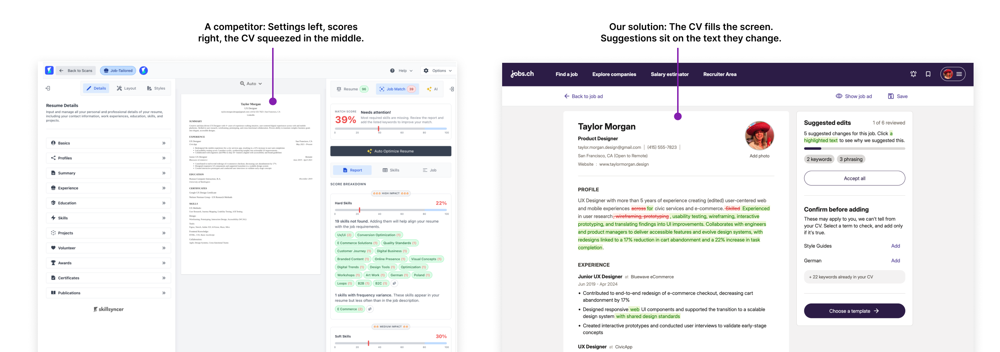
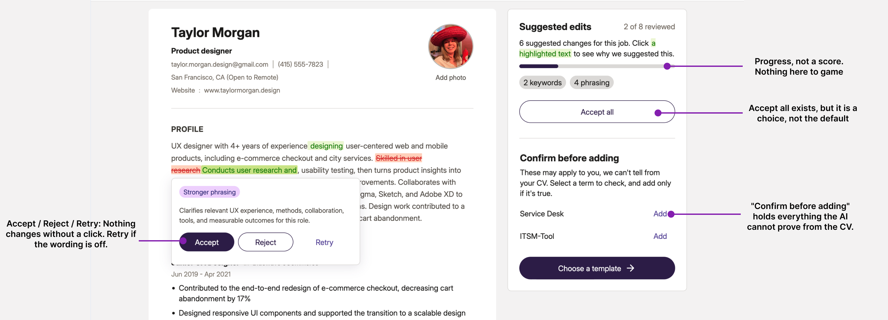
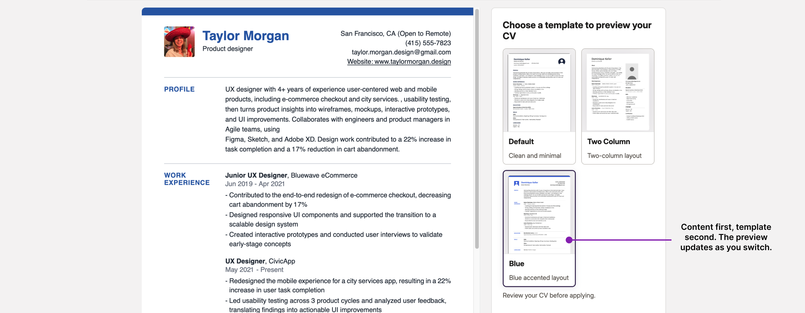
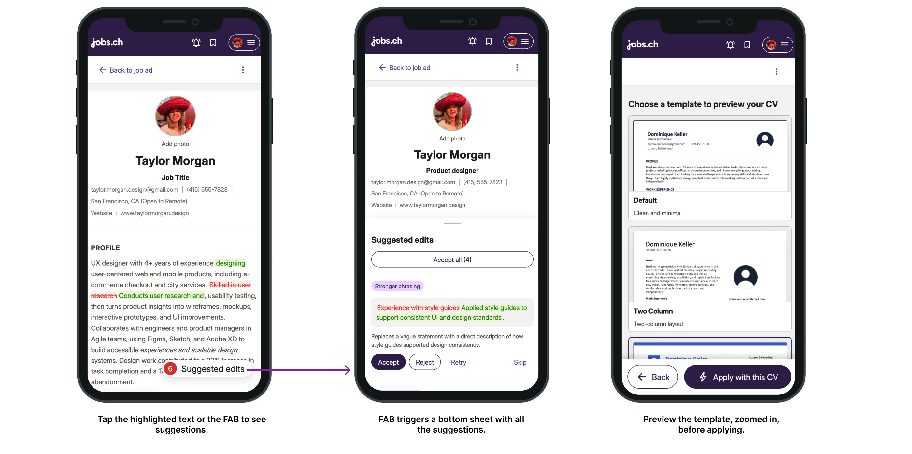
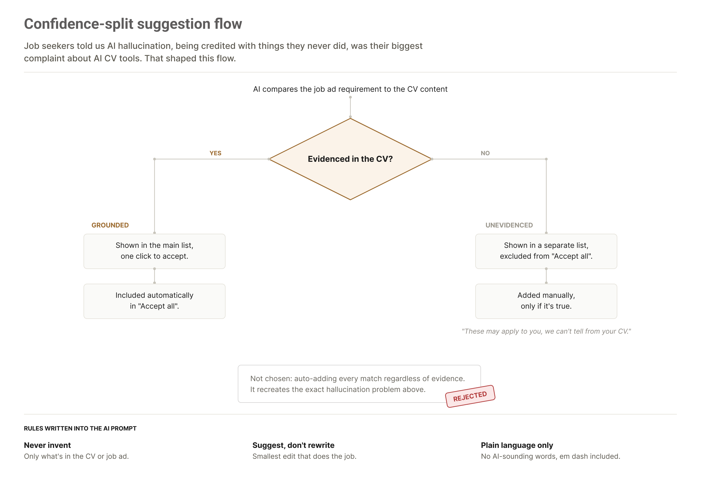

CV Optimizer: keeping AI suggestions honest
Role: Senior UX Designer.
Team: Scrum team of 2 frontend , 2 backend, and a product manager.
Duration: 4 months, concept to production.
Status: In build. Prototype tested, implementation underway.
Platforms: jobs.ch and jobup.ch.
How I used AI on this project
- AI in discovery. I mined around 50 real conversations to understand how job seekers tailor their CV and where it hurts, then checked the findings against a survey. Weeks of research work, done in days. I turned the method into a reusable AI skill for the team and used the results to set the product direction.
- AI in the product. I designed how the AI behaves: suggestions split by confidence, a hard rule against inventing anything, and a limit on what the AI decides so a person can always check it. I edit the prompt myself, so I can change what the product does without filing a ticket. I also gave it a list of words to avoid, so the CV still sounds like the person who wrote it.
- AI in the making. I built the prototype in code, on our real codebase, with the AI connected end to end. A working, testable product in six weeks instead of four months. I did not open Figma for the core flow.
1. The problem, and an impossible timeline
JobFit shows job seekers how well their CV matches a job ad. People liked it, but told us it wasn't actionable. They saw a score and didn't know what to change in their CV.
So job seekers were already optimizing their CV. Just not with us.
We had two goals: keep job seekers on the platform, desktop and mobile, for the full journey from finding a job to tailoring a CV to applying, and send employers better-matched candidates. Four months to design and ship a new feature is tight, so I leaned on AI to move faster. This concept was highly interactive, a natural fit for vibe coding. It showed the team exactly what I meant, not just a static Figma file.
2. Deciding what to build
The product manager and I split the research. She went through papers. I went to where job seekers actually talk: about 50 threads on Reddit, mostly Swiss subreddits, mined with AI in hours instead of weeks. I turned that process into a reusable AI skill so the rest of the team could run it too, and wrote up the method and its limits in a separate case study.
Read how the conversation mining worked →
Reddit is a biased sample, so I asked the UX research team to test the findings with a 200-person survey. The same patterns came back: 70% spend under 30 minutes tailoring a CV, 64% cite the lack of an ATS check as a top frustration, 62% say AI output feels too generic, and 69% want full control over their edits. Some had also seen AI invent things they never did.
To decide the direction, we built prototypes from the findings and showed them to the team. The product manager's instinct was one button: click, get an optimized CV back. The research pointed the other way, so I built a fully editable CV that highlights suggestions with the user in control. Once the team saw it working, the one-button version was never on the table again.
JTBD and the principles that guided every decision
Tailor this CV to this job in under 15 minutes
Fast, with an escape hatch: accept suggestions one by one, or accept all.
Stop me from sounding like ChatGPT
We suggest, we never rewrite without asking. The user owns the CV.
Get past the bot so a human sees me
Show the why: every suggestion cites the line in the job ad that triggered it, in one sentence. Offer an ATS-friendly CV template.
3. The CV as the core of the interface
Most competitors shrink the CV to a thumbnail and surround it with score panels, keyword chips, and collapsed settings. The thing the user came to change ends up the smallest thing on screen.
{kind=link}

- Constraint
- 15 minutes to optimize the CV, and mobile. A three-panel dashboard has no phone answer, and we want to allow CV optimization on mobile.
- Decision
- The CV fills the screen and every part of it is editable in place, like a document in Notion or Google Docs. Suggestions are inline highlights on the text they change. Click one, see why in a sentence, accept, reject, or retry. The side panel holds only progress and the suggestions we aren't confident about. No match score anywhere, because a score invites gaming, and we already knew users chase numbers until the CV stops reading like a person wrote it.
- Mobile
- Same document, different mechanics. The CV stays full width. Suggestions collapse into a floating action button, and reviewing opens a bottom sheet one suggestion at a time with accept, reject, retry, and skip. Accept all sits at the top for anyone in a hurry.
- How it got built
- Engineering said a fully editable CV was too complex for the timeline. I vibe coded a version in a few days and the objection died. From there I worked full time with a frontend engineer for six weeks on a real prototype, on our own codebase, on a shared GitHub branch. It worked end to end: upload a CV, parse it, get live AI suggestions, apply a template, export a PDF. Not a clickable mockup.
{kind=link}

{kind=link}

{kind=link}

4. Preventing AI hallucination
Job seekers told us the AI tools they use kept adding skills or experience they didn't actually have. That was their biggest complaint. So ours had to avoid doing the same thing.
Our solution splits suggestions by confidence. When it's not sure a suggestion is backed by the CV, we add friction: it can't be auto-applied, the user has to check it and add it themselves.
{kind=link}

Sounding like a person, not a bot
The frontend engineer gave me access to the AI prompt, so I could edit it directly and see how it reacts. The rule that mattered most here was to explain everything in one plain sentence, no AI vocabulary. I added a list of banned words that sound too AI, the em dash included.
5. Testing the prototype with real job seekers
We ran usability tests with 8 people, 4 on desktop and 4 on mobile.
Because the prototype ran on our real codebase, they tested the real thing. They uploaded their own CV, got real AI suggestions, and applied a template. Normally at this stage we test screenshots or a Figma prototype that breaks as soon as someone does something unexpected. This time people couldn't tell it was a prototype, so their feedback was about the product itself.
It also cost us. Something I had coded on my own disabled CV editing on iOS. We tested before the sessions and missed it. The first two participants were on iOS and couldn't interact with anything, so we lost 2 of our 8 sessions.
What we learned:
- People didn't realize they could edit the CV, even with an infobox and a text cursor. This is the heart of the concept, so it's the most important finding. Our fix is to open with one field already in edit state, so the first thing they see is the CV being edited.
- They wanted the template to feel more personal. The option that fits our timeline: let them choose the highlight color between green, blue, or orange.
- If their CV had a photo, they expected it in the optimized version. A quick fix for the engineer.
6. Where it stands
The feature is in build, live before the end of the term. I'll come back and update this with the impact: whether people are using their optimized CV to apply, whether the 15 minutes holds, and whether employer-side candidate quality moves.
7. Learnings
- Building it in code meant we had something real to test after six weeks instead of four months. People used their own CVs and got real AI suggestions, so what we learned was real too.
- There's a point where you have to stop. After about six weeks I was spending more time fixing bugs than making progress. That was the signal. Engineering took over the build, and I kept improving the prototype alongside them.
- A prototype in code still changes like any design. I showed it to the design community three times and changed a lot, like turning the tabs into buttons. I also went back to Figma for the navigation, because trying five options is quicker there.